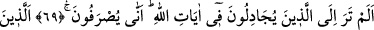
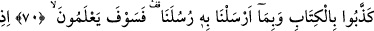
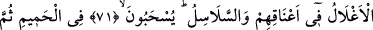
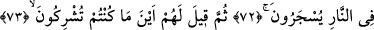
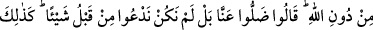
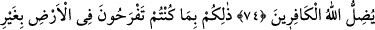
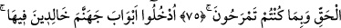
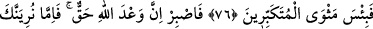
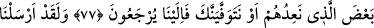
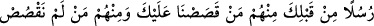
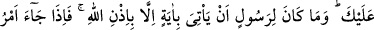
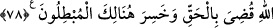
NASIL OLSA
ONLAR BİZE DÖNECEKLERDİR
69. Allah’ın âyetleri hakkında tartışanlara bakmadın mı? Nasıl döndürülüyorlar
(onu tasdike yanaşmıyorlar)!
70. Onlar, Kitab’ı ve peygamberlerimize gönderdiklerimizi yalanlayanlardır.
Onlar yakında (gerçeği) anlayacaklar!
71, 72. Boyunlarında demir halkalar ve zincirler olduğu halde, sıcak suya
sürüklenecekler, sonra da ateşte yakılacaklardır.
73, 74. Sonra onlara: Allah’ı bırakıp da koştuğunuz ortaklar nerededir?
denilecek. Onlar da: Bizden uzaklaştılar, zaten biz önceleri hiçbir şeye
tapmıyorduk, diyecekler. İşte Allah kâfirleri böyle şaşırtır.
75. Bu, sizin yeryüzünde haksız olarak şımarmanızdan ve aşırı derecede sevinip
böbürlenmenizden ötürüdür.
76. İçinde ebedî kalmak üzere cehennemin kapılarından girin! Kibirlenenlerin
dönüp gidecekleri yer ne çirkindir!
77. Onun için (Resûlüm), sen sabret! Şüphesiz Allah’ın vaâdi gerçektir. Onlara
söz verdiğimiz azabın bir kısmını ya sana gösteririz, yahut seni daha önce vefat
ettiririz. Nasıl olsa onlar bize döneceklerdir.